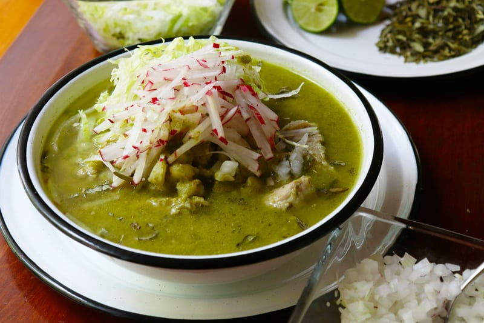

Receta de Pozole Verde

Descripcion
Es un caldo tradicional mexicano elaborado con granos de maíz cacahuazintle cocidos y carne (cerdo o pollo). Su color y sabor característicos provienen de una salsa a base de tomates verdes, chiles, cilantro y pepitas de calabaza, y se sirve con una gran variedad de verduras frescas encima.
Ingredientes
- 1 kg de maíz cacahuazintle
- 1 kg de carne de cerdo cortada
- 500 g de tomates verde
- 1 chile poblano y 2 chiles jalapeños
- 1 cebolla y 2 dientes de ajo
- 1 taza de pepitas de calabaza tostadas
- 1 manojo de cilantro y una pizca de cominos
- Lechuga picada y rabanitos en rodajas
- cebolla picada y orégano seco
- limones y tostadas de maíz
Pasos
- Cocinar la carne y el maíz: Hierve el maíz precocido y la carne en una olla grande con agua, un trozo de cebolla y sal hasta que la carne esté suave y el maíz florezca.
- Preparar la salsa verde: Licúa los tomates, los chiles, la cebolla, el ajo, el cilantro, las pepitas de calabaza, el comino y un poco del caldo de la cocción hasta obtener una mezcla tersa.
- Sazonar la salsa: Calienta un poco de aceite en una sartén grande, vierte la salsa verde licuada y cocínala a fuego medio durante 10 minutos hasta que cambie a un color más oscuro.
- Integrar el pozole: Vierte la salsa verde cocida en la olla principal con el maíz y la carne, mezcla bien y deja hervir todo junto a fuego bajo durante 20 minutos para unificar los sabores.
- Servir: Sirve el pozole verde bien caliente en platos hondos y acompáñalo al gusto con la lechuga, los rabanitos, la cebolla, el orégano, el limón y las tostadas.
Inicio